Районы · Центр
Куда сходить в центре Петербурга
255 мест в центре Петербурга (Центральный и Адмиралтейский районы): 48 ресторанов и кафе, 40 баров, 33 музея и 29 мест для прогулки. Например, «Сундук», «Salone Pasta&Bar» и «Главный штаб Эрмитажа». 140 готовых планов начинаются здесь. Больше всего мест у станций «Адмиралтейская», «Чернышевская» и «Невский проспект».
- 255 мест
- 140 планов
- 8 клубов
Места 40 из 247
Фурштатская ул., 42
Новое
Кафе, интерьер которого тридцать лет собирали из картин, витражей, самоваров и винила; вечерами играют джаз и блюз. Есть что разглядывать вдвоём.
Подробнее и маршрут: СундукПозвать сюда: Сундук
Фото здания: Анастасия Юрьевна Львова, CC BY-SA 4.0 · Wikimedia Commons
наб. реки Фонтанки, 30
Новое
Свежая паста и бар на Фонтанке — лёгкий итальянский ужин вдвоём без лишней торжественности.
Подробнее и маршрут: Salone Pasta&BarПозвать сюда: Salone Pasta&Bar
Фото здания: GAlexandrova, CC BY-SA 4.0 · Wikimedia Commons
Дворцовая площадь, 6-8
Новое
Импрессионисты, Матисс и Пикассо в светлых анфиладах под стеклянными крышами, плюс большие сменные выставки.
Подробнее и маршрут: Главный штаб ЭрмитажаПозвать сюда: Главный штаб Эрмитажа
Фото: Max A. Khlopov, CC BY-SA 3.0 · Wikimedia Commons
ул. Рубинштейна, 23
Новое
Квартира Сергея Довлатова на Рубинштейна: история писателя и Ленинграда 70-х в одном доме.
Подробнее и маршрут: Музей ДовлатоваПозвать сюда: Музей Довлатова
Фото: Kommunalka1912, CC BY-SA 4.0 · Wikimedia Commons
Невский пр., 54
Новое
Интерьеры старинного фотоателье Буллы с небольшой экспозицией о мастере; в декорациях можно сниматься, бывают вечера с концертом. Лучше днём при дневном свете.
Подробнее и маршрут: Музей-фотосалон Карла БуллыПозвать сюда: Музей-фотосалон Карла Буллы
Фото: Karl Bulla, общественное достояние · Wikimedia Commons
Миллионная ул., 25
Новое
Какаочная в двух шагах от Эрмитажа: густой горячий шоколад и авторское какао из окошка — согреться посреди прогулки.
Подробнее и маршрут: ЧАО КакаоПозвать сюда: ЧАО Какао
Фото здания: Александр Сигачёв, CC BY-SA 4.0 · Wikimedia Commons
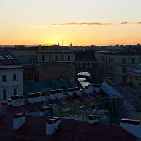
наб. реки Мойки, 22
Новое
Ресторан на верхнем этаже отеля у Дворцовой: панорама крыш и соборов, сезонная кухня.
Подробнее и маршрут: BellevueПозвать сюда: Bellevue
Фото: Moneycantbuy, CC BY-SA 4.0 · Wikimedia Commons
Кирочная ул., 8
Новое
Лютеранская церковь с выразительными голыми стенами: органные концерты, выставки, перформансы.
Подробнее и маршрут: АнненкирхеПозвать сюда: Анненкирхе
Фото: Екатерина Борисова, CC BY-SA 4.0 · Wikimedia Commons
Шпалерная ул., 26
Новое
Интерактивный музей, где гиды общаются жестами, а гости — без слов; есть формат «свидания в тишине» с мастер-классом.
Подробнее и маршрут: В тишинеПозвать сюда: В тишине
Фото здания: Vityavo, CC BY-SA 4.0 · Wikimedia Commons
Казанская ул., 7
Новое
Квест-центр у Казанского собора: хорроры с живыми актёрами и лаунж, где можно отметить победу после игры.
Подробнее и маршрут: Взаперти на КазанскойПозвать сюда: Взаперти на Казанской
Фото: Vladimir Ivanov, общественное достояние · Wikimedia Commons
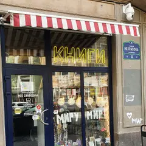
ул. Некрасова, 23
Новое
Уютный независимый книжный на Некрасова с кафе и мансардой, где легко засидеться с какао и книгой; есть и полка комиксов.
Подробнее и маршрут: Все свободныПозвать сюда: Все свободны
Фото: ELindas, CC BY-SA 4.0 · Wikimedia Commons
Дворцовая пл.
Новое
Главная площадь города: Зимний дворец, арка Главного штаба и Александровская колонна; вечерняя подсветка — отдельное удовольствие.
Подробнее и маршрут: Дворцовая площадьПозвать сюда: Дворцовая площадь
Фото: Godot13, CC BY-SA 4.0 · Wikimedia Commons
Невский пр., 28
Новое
Книжный в доме Зингера на Невском: огромный выбор, кафе, из окон которого виден Казанский собор, и та самая башня с глобусом.
Подробнее и маршрут: Дом книгиПозвать сюда: Дом книги
Фото: Florstein, CC BY-SA 4.0 · Wikimedia Commons
Садовая ул., 21А
Новое
Кофейня на всех пяти этажах модернового дома 1903–1904 годов: лестница модерн, исторические окна, зелень на первом этаже и мини-оранжерея на втором.
Подробнее и маршрут: Дом ФлоуПозвать сюда: Дом Флоу
Фото здания: Артём Светлов, CC BY-SA 4.0 · Wikimedia Commons
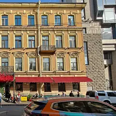
Караванная ул., 8
Новое
Демократичное кафе с домашней кухней: хинкали, хачапури-фокачча, сытные салаты — под большую компанию.
Подробнее и маршрут: Мама ТатаПозвать сюда: Мама Тата
Фото здания: Анастасия Юрьевна Львова, CC BY-SA 4.0 · Wikimedia Commons
Соляной пер., 15
Новое
Музей прикладного искусства со стеклянным куполом Большого зала — одно из самых красивых пространств.
Подробнее и маршрут: Музей ШтиглицаПозвать сюда: Музей Штиглица
Фото: Lion10~commonswiki, CC BY-SA 4.0 · Wikimedia Commons
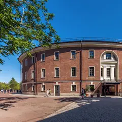
наб. Адмиралтейского канала, 2
Новое
Остров с выставками, лекциями, кино и маркетами в старых складах; в любое время года есть программа.
Подробнее и маршрут: Новая ГолландияПозвать сюда: Новая Голландия
Фото: Florstein, CC BY-SA 4.0 · Wikimedia Commons
Шпалерная ул., 43
Новое
Тёплый зимний сад с пальмами, кактусами и лианами — тропики посреди холодного сезона. Приятно зайти вдвоём, когда на улице слякоть.
Подробнее и маршрут: Оранжерея Таврического садаПозвать сюда: Оранжерея Таврического сада
Фото: Екатерина Борисова, CC BY-SA 4.0 · Wikimedia Commons
Гороховая ул., 57
Новое
Круглая лестничная клетка с шестью колоннами, уходящими к куполу; стены исписаны пожеланиями гостей. Главный кадр — снизу вверх по оси колонн. Жилой дом: днём пускают за небольшое пожертвование, приходить тихо и небольшой компанией.
Подробнее и маршрут: Парадная с ротондой (дом Яковлева)Позвать сюда: Парадная с ротондой (дом Яковлева)
Фото: Artyom Svetlov, CC BY-SA 4.0 · Wikimedia Commons
ул. Восстания, 31
Новое
Уютная кофейня у Чернышевской с вишнёвым пирогом и вечерними кинопоказами — спокойный вариант для неспешного свидания.
Подробнее и маршрут: ПенкаПозвать сюда: Пенка
Фото здания: Bestalex, CC BY-SA 4.0 · Wikimedia Commons
наб. канала Грибоедова, 2Б
Новое
Храм-музей, полностью покрытый мозаикой изнутри, — одна из самых ярких точек центра.
Подробнее и маршрут: Спас на КровиПозвать сюда: Спас на Крови
Фото: Рустам Абдрахимов, CC BY 3.0 · Wikimedia Commons
Владимирский пр., 12
Новое
Живой репертуарный театр у Владимирской: яркие режиссёрские спектакли и сильная труппа.
Подробнее и маршрут: Театр им. ЛенсоветаПозвать сюда: Театр им. Ленсовета
Фото: Дарья Пичугина, CC BY-SA 2.5 · Wikimedia Commons
ул. Зодчего Росси, 2
Новое
Старинная библиотека с историей от XVIII века: сюда приходят на выставки, лекции и экскурсии. Тихий культурный повод для прогулки по центру вдвоём.
Подробнее и маршрут: Театральная библиотекаПозвать сюда: Театральная библиотека
Фото: Chirukhin Igor, CC BY-SA 4.0 · Wikimedia Commons
ул. Белинского, 13
Новое
Пражская пивная в центре: чешское разливное, рулька и колбаски, а для болельщиков — экран с футбольными матчами.
Подробнее и маршрут: Чешская пивницаПозвать сюда: Чешская пивница
Фото здания: Никонико962, CC BY-SA 4.0 · Wikimedia Commons
Садовая ул., 54
Новое
Пейзажный сад у Сенной с большим прудом и островком; местные коты-старожилы встречают гостей, открыт с утра до позднего вечера.
Подробнее и маршрут: Юсуповский садПозвать сюда: Юсуповский сад
Фото: A.Z.Anisimov, CC BY-SA 4.0 · Wikimedia Commons
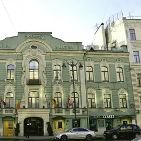
ул. Марата, 11
Новое
Ресторан при отеле «Гельвеция»: русско-итальянское меню и тихий красивый двор для неспешного ужина.
Подробнее и маршрут: Café ClaretПозвать сюда: Café Claret
Фото здания: GAlexandrova, CC BY-SA 4.0 · Wikimedia Commons
площадь Островского, 6
Новое
Старейший драмтеатр России в здании Росси: классика в новой режиссуре и зал с ложами в золоте.
Подробнее и маршрут: Александринский театрПозвать сюда: Александринский театр
Фото: Bene Riobó, CC BY-SA 4.0 · Wikimedia Commons
Адмиралтейский пр.
Новое
Сквер у Адмиралтейства с фонтаном и видом на золотой шпиль — удобная передышка между Дворцовой и Исаакием.
Подробнее и маршрут: Александровский садПозвать сюда: Александровский сад
Фото: Alexander77, CC BY-SA 3.0 · Wikimedia Commons
ул. Рубинштейна, 13
Новое
Коктейльный бар без вывески: замкнутый полутёмный зал в строгом минимализме, где всё внимание на стойке. Дверь легко пропустить даже на Рубинштейна.
Подробнее и маршрут: АрхитекторПозвать сюда: Архитектор
Фото здания: Александр Сигачёв, CC BY-SA 4.0 · Wikimedia Commons
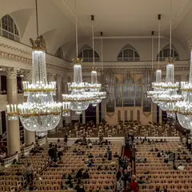
Михайловская ул., 2/9
Новое
Белоколонный зал, где играет Заслуженный коллектив России; классика в самом красивом зале города.
Подробнее и маршрут: Большой зал Филармонии им. ШостаковичаПозвать сюда: Большой зал Филармонии им. Шостаковича
Фото: Александровы АГ, CC BY-SA 4.0 · Wikimedia Commons
ул. Маяковского, 19/15
Новое
Большой книжный на Маяковского с местами для чтения, встречами с авторами и хорошим нон-фикшном — легко зависнуть на час.
Подробнее и маршрут: Во весь голосПозвать сюда: Во весь голос
Фото здания: GAlexandrova, CC BY-SA 4.0 · Wikimedia Commons
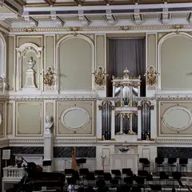
наб. реки Мойки, 20
Новое
Старинный зал с идеальной акустикой у Певческого моста; хоровые и симфонические концерты.
Подробнее и маршрут: Государственная академическая КапеллаПозвать сюда: Государственная академическая Капелла
Фото: GAlexandrova, CC BY-SA 4.0 · Wikimedia Commons
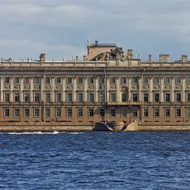
Дворцовая наб.
Новое
Гранит вдоль Эрмитажа с самым широким видом на Неву, Петропавловку и Стрелку; ночью здесь ждут разводку Дворцового моста.
Подробнее и маршрут: Дворцовая набережнаяПозвать сюда: Дворцовая набережная
Фото: A.Savin, CC BY-SA 3.0 · Wikimedia Commons
ул. Рубинштейна, 7
Новое
Конструктивистский дом 1929–1931 годов с террасой пятого этажа под скатной кровлей и доской Ольге Берггольц на фасаде. Удобный ракурс — с угла Графского переулка.
Подробнее и маршрут: Дом-коммуна «Слеза социализма»Позвать сюда: Дом-коммуна «Слеза социализма»
Фото: Potekhin, CC BY-SA 3.0 · Wikimedia Commons
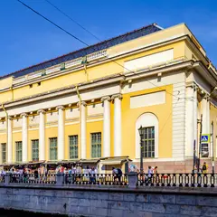
Инженерная ул., 2-4
Новое
Кафе в колонном зале корпуса Бенуа Русского музея: завтраки, красивые десерты и русская кухня в исторических стенах.
Подробнее и маршрут: Кафе БенуаПозвать сюда: Кафе Бенуа
Фото: Никонико962, CC BY-SA 4.0 · Wikimedia Commons
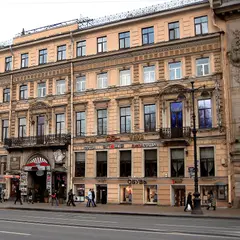
Невский пр., 60
Новое
Старейший кинотеатр города с бархатным залом: премьеры, фестивали и показы авторского кино.
Подробнее и маршрут: Кинотеатр «Аврора»Позвать сюда: Кинотеатр «Аврора»
Фото: GAlexandrova, CC BY-SA 4.0 · Wikimedia Commons
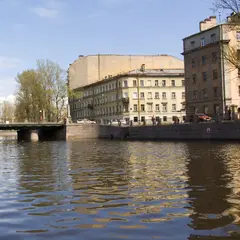
наб. Крюкова канала, Пикалов мост
Новое
Тихий старый квартал у Никольского собора: с одной точки у Пикалова моста видно семь мостов, вокруг каналы и мало людей.
Подробнее и маршрут: Коломна и СемимостьеПозвать сюда: Коломна и Семимостье
Фото: Lite, CC BY-SA 3.0 · Wikimedia Commons
наб. канала Грибоедова, 2
Новое
Русский XX век: Малевич, Петров-Водкин, Кандинский и крупные временные проекты в отдельном здании.
Подробнее и маршрут: Корпус Бенуа Русского музеяПозвать сюда: Корпус Бенуа Русского музея
Фото: Никонико962, CC BY-SA 4.0 · Wikimedia Commons
наб. Кутузова, 30
Новое
Старейший регулярный сад города: мраморные статуи, фонтаны и знаменитая ограда у Невы. Осенью аллеи особенно хороши.
Подробнее и маршрут: Летний садПозвать сюда: Летний сад
Фото: Anastasia Galyamicheva, CC BY-SA 4.0 · Wikimedia Commons
Кузнечный пер., 5
Новое
Последняя квартира писателя, где написаны «Братья Карамазовы», а рядом Кузнечный рынок и Владимирская.
Подробнее и маршрут: Литературно-мемориальный музей ДостоевскогоПозвать сюда: Литературно-мемориальный музей Достоевского
Фото: Александровы АГ, CC BY-SA 4.0 · Wikimedia Commons


Готовые планы 18 из 140
- Museum Route 66 · Музей · м. Невский проспект
- 3 минуты пешкомСпас на Крови · Музей
- 9 минут пешкомЧАО Какао · Какаочная
Фотографируетесь в декорациях старого кино, проходите мимо Спаса на Крови и греетесь какао в пяти минутах. Лёгкий план, где есть чем заняться и о чём говорить.
Открыть план: Америка 60-х и какаоПозвать сюда: Америка 60-х и какао
Фото: Рустам Абдрахимов, CC BY 3.0 · Wikimedia Commons
- Музей Арктики и Антарктики · Музей · м. Владимирская
- 5 минут пешкомБа · Ресторан русской кухни
- 1 минута пешкомRing o'Bells · Паб
Полярные экспедиции в музее, потом сытные щи в пяти минутах и пинта в пабе буквально через дорогу.
Открыть план: Арктика, щи и пабПозвать сюда: Арктика, щи и паб
Фото: Виктор Лимаренко, CC BY-SA 4.0 · Wikimedia Commons
- Думская башня · Смотровая площадка · м. Невский проспект
- 6 минут пешкомНабережная канала Грибоедова · Набережная
- 7 минут пешкомOy! · Коктейльный бар
Поднимаетесь на башню к закату, спускаетесь к каналу Грибоедова и минут за десять доходите до коктейльного бара. Сначала виды, потом разговор.
Открыть план: Башня над Невским и коктейлиПозвать сюда: Башня над Невским и коктейли
Фото: Vadim Indeikin, CC BY-SA 3.0 · Wikimedia Commons
- Театральная библиотека · Библиотека · м. Гостиный двор
- 2 минуты пешкомУлица Зодчего Росси · Улица
- 4 минуты пешкомOy! · Коктейльный бар
Заходите на выставку в старинную библиотеку, выходите прямо на идеально симметричную улицу Росси и через пять минут пешком садитесь в коктейльном баре.
Открыть план: Библиотека, улица Росси и коктейлиПозвать сюда: Библиотека, улица Росси и коктейли
Фото: Chirukhin Igor, CC BY-SA 4.0 · Wikimedia Commons
- Путь · Галерея · м. Сенная площадь
- 7 минут пешкомДом Флоу · Кофейня в особняке модерн
Днём проходите личные задания в галерее, затем пять минут пешком до кофейни в особняке модерн: спокойное место, чтобы обсудить, кому что откликнулось.
Открыть план: Выставка о себе и кофе в особнякеПозвать сюда: Выставка о себе и кофе в особняке
Фото здания: Артём Светлов, CC BY-SA 4.0 · Wikimedia Commons
- Дворцовая площадь · Площадь · м. Адмиралтейская
- 4 минуты пешкомПышки на Большой Морской · Пышечная
Вечерняя прогулка по Дворцовой площади, а через три минуты — пышки, которые продают до 23:00.
Открыть план: Дворцовая и пышкиПозвать сюда: Дворцовая и пышки
Фото: Godot13, CC BY-SA 4.0 · Wikimedia Commons
- Музей Довлатова · Музей · м. Достоевская
- 7 минут пешкомМандрагора · Кафе
Камерный музей в коммуналке писателя и пять минут пешком до кафе, где к коктейлю гадают по руке и на кофейной гуще — будет что сравнить.
Открыть план: Довлатов, а потом тароПозвать сюда: Довлатов, а потом таро
Фото: Kommunalka1912, CC BY-SA 4.0 · Wikimedia Commons
- Музей Довлатова · Музей · м. Достоевская
- 7 минут пешкомБа · Ресторан русской кухни
- 1 минута пешкомEl Copitas · Коктейльный бар
Короткий музей Довлатова, ужин в щичной в пяти минутах ходьбы и коктейль в соседнем баре напоследок.
Открыть план: Довлатов, щи и коктейльПозвать сюда: Довлатов, щи и коктейль
Фото: Kommunalka1912, CC BY-SA 4.0 · Wikimedia Commons
- Литературно-мемориальный музей Достоевского · Музей · м. Владимирская
- 3 минуты пешкомБа · Ресторан русской кухни
Квартира Достоевского в двух минутах от щичной: после музея — горячие щи и соленья, очень петербургский осенний вечер.
Открыть план: Достоевский и тарелка щейПозвать сюда: Достоевский и тарелка щей
Фото: Александровы АГ, CC BY-SA 4.0 · Wikimedia Commons
- Взаперти на Казанской · Квест · м. Невский проспект
- 7 минут пешкомПышечка · Пышечная
Выбраться из квеста на Казанской и через пять минут отметить победу пышками на Гороховой.
Открыть план: Квест и пышкиПозвать сюда: Квест и пышки
Фото: Vladimir Ivanov, общественное достояние · Wikimedia Commons
- Анненкирхе · Арт-пространство · м. Чернышевская
- 9 минут пешкомСундук · Арт-кафе
Смотрите выставку в старой кирхе и за семь минут доходите до кафе, где каждая стена — отдельная коллекция. Два необычных интерьера подряд.
Открыть план: Кирха и кафе-кунсткамераПозвать сюда: Кирха и кафе-кунсткамера
Фото: Екатерина Борисова, CC BY-SA 4.0 · Wikimedia Commons
- Думская башня · Смотровая площадка · м. Невский проспект
- 4 минуты пешкомДом книги · Книжный магазин
- 7 минут пешкомСейф Coffee · Кофейня
Двести ступеней ради панорамы, потом три минуты до Дома книги за открытками и кофе по соседству. Всё в одном квартале у Невского.
Открыть план: Крыши, книги и кофеПозвать сюда: Крыши, книги и кофе
Фото: Florstein, CC BY-SA 4.0 · Wikimedia Commons
- Музей Штиглица · Музей · м. Чернышевская
- 3 минуты пешкомCasimir · Кофейня
Роскошные залы музея Штиглица, а через две минуты — уютная кофейня с осенним меню, чтобы согреться супом или оладьями.
Открыть план: Музей Штиглица и тыквенный супПозвать сюда: Музей Штиглица и тыквенный суп
Фото: Lion10~commonswiki, CC BY-SA 4.0 · Wikimedia Commons
- Оранжерея Таврического сада · Оранжерея · м. Чернышевская
- 5 минут пешкомAm Saint · Кофейня
Фотографируетесь среди лиан и кактусов, а потом семь минут идёте до кофейни. Короткий план, когда хочется зелени посреди серого сезона.
Открыть план: Оранжерея и кофеПозвать сюда: Оранжерея и кофе
Фото: Екатерина Борисова, CC BY-SA 4.0 · Wikimedia Commons
- Парадная с ротондой (дом Яковлева) · Парадная с ротондой · м. Сенная площадь
- 6 минут пешкомПышечная на Садовой · Пышечная
Заглянуть в парадную с ротондой на Гороховой, а через пять минут пешком согреться пышками у Апраксина двора.
Открыть план: Ротонда и пышкиПозвать сюда: Ротонда и пышки
Фото: Artyom Svetlov, CC BY-SA 4.0 · Wikimedia Commons
- Парадная с ротондой (дом Яковлева) · Парадная с ротондой · м. Сенная площадь
- 9 минут пешкомДом Флоу · Кофейня в особняке модерн
Круглая лестница с колоннами до купола, потом кофе на пяти этажах особняка с оранжереей на Садовой.
Открыть план: Ротонда на Гороховой и кофе в доме модернПозвать сюда: Ротонда на Гороховой и кофе в доме модерн
Фото: Artyom Svetlov, CC BY-SA 4.0 · Wikimedia Commons
- Проходные дворы Толстовского дома · Проходные дворы, северный модерн · м. Достоевская
- 4 минуты пешкомДом-коммуна «Слеза социализма» · Дом-коммуна, конструктивизм
- 3 минуты пешкомАрхитектор · Коктейльный бар без вывески
Арки Толстовского дома, конструктивистская «Слеза социализма» и коктейль в «Архитекторе», который легко пройти мимо.
Открыть план: Рубинштейна: дворы Лидваля и бар без вывескиПозвать сюда: Рубинштейна: дворы Лидваля и бар без вывески
Фото: angelius1979, CC BY-SA 3.0 · Wikimedia Commons
- Музей-фотосалон Карла Буллы · Старинное фотоателье · м. Гостиный двор
- 2 минуты пешкомПышки из детства · Пышечная
Сначала старинное фотоателье на Невском, потом в двух минутах пешком — пышки с кофе, чтобы обсудить увиденное.
Открыть план: Старые снимки и пышкиПозвать сюда: Старые снимки и пышки
Фото: Karl Bulla, общественное достояние · Wikimedia Commons


Компьютерные клубы 8
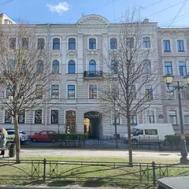
Фурштатская ул., 25
КруглосуточноНовое
Круглосуточный клуб у Чернышевской, в паре кварталов от Таврического сада — легко совместить игру с прогулкой.
Подробнее и маршрут: Divinity SpaceПозвать сюда: Divinity Space
Фото здания: Анастасия Юрьевна Львова, CC BY-SA 4.0 · Wikimedia Commons
Невский пр., 91
КруглосуточноНовое
Клуб прямо на Невском у Московского вокзала, открыт без перерыва — можно скоротать время до поезда или провести ночь с друзьями.
Загородный пр., 45
КруглосуточноНовое
Один из самых обсуждаемых клубов центра — сотни отличных отзывов, открыт круглые сутки, от Пушкинской идти пару минут.
Подробнее и маршрут: Colizeum · ЗагородныйПозвать сюда: Colizeum · Загородный
Гороховая ул., 49
КруглосуточноНовое
Круглосуточный клуб у Сенной с солидной базой отзывов; есть подарочные сертификаты и доступ к играм по подписке.
Подробнее и маршрут: Community HeroesПозвать сюда: Community Heroes
Миргородская ул., 1БЖ
КруглосуточноНовое
Точка известной киберспортивной сети в квартале за Московским вокзалом: ПК и приставки PlayStation, открыто 24/7, оценки у игроков почти идеальные.
пер. Антоненко, 5
КруглосуточноНовое
На Васильевском недалеко от Василеостровской: игровые ПК, кальян и бильярд под одной крышей, открыто 24/7, пускают с собакой.
Невский пр., 136
КруглосуточноНовое
Круглосуточный клуб на Невском недалеко от площади Восстания — удобная точка сбора, чтобы играть командой до утра.
Кременчугская ул., 11к1
КруглосуточноНовое
Демократичные цены — порядка 150 ₽ за час, работает 24/7; хороший вариант для долгой сессии с друзьями.
Подробнее и маршрут: Центр киберспортаПозвать сюда: Центр киберспорта
Как позвать
- Выбери план, место или событие — в карточке адрес, цены и маршрут в Яндекс Картах.
- Нажми «Позвать сюда» — соберётся приглашение-игра для свидания или голосование для компании.
- Отправь ссылку в любой мессенджер: тебе ответят, а компания отметит, куда и когда может. Бесплатно и без регистрации.